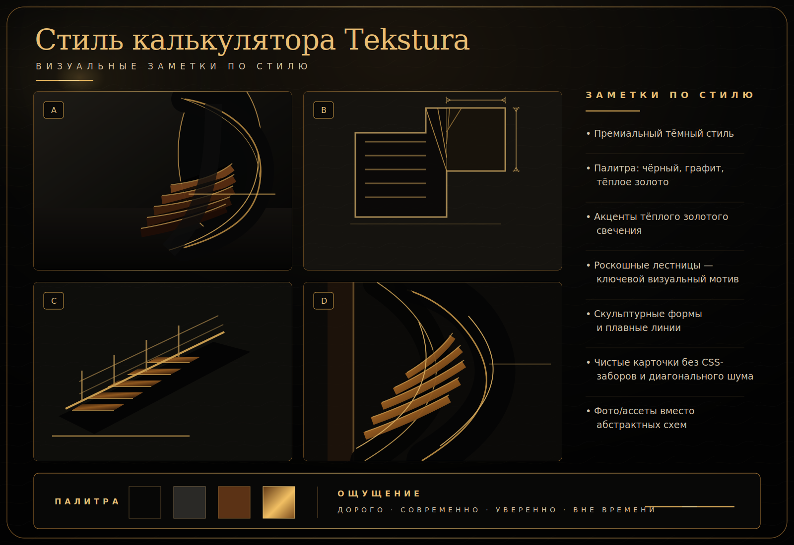

Стиль калькулятора Tekstura
Обновлённая картинка-направление в стиле приложенного референса: тёмный интерьерный moodboard, крупные лестничные фото/визуалы, тонкие золотые рамки, заметки справа и палитра снизу. Это ориентир для PR #157: премиально, чисто, без CSS-заборов, синего glow и случайных диагональных схем.

Открывать можно как обычную страницу: docs/calculator-preview-design-direction.html. Сам PNG: docs/assets/calculator-preview/tekstura-dashboard-design-direction.png.